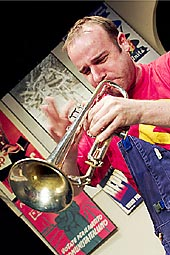

|  |
| Colin Steele |
Biography:Colin SteeleTrumpetColin’s debut recording, Twilight Dreams, was included in The Guardian top 5 jazz CDs of 2002. His follow up, The Journey Home was voted Jazz Review CD of the year, The New Statesman British jazz CD of the year, and also in The Observer top 3 CDs of the year. This recording confirms Colin’s status as a highly original composer and an international star with a clear Scottish voice. “Beautifully conceived and executed, mellow and melodic, Colin Steele’s music has instant appeal” The Observer More information from: |